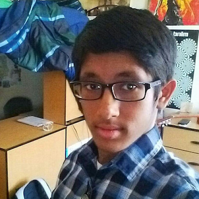

Our team is an extracurricular group of students. We all go to the Texas Academy of Mathematics and Science. TAMS is a unique residential program for high school-aged Texas students who are high achievers and interested in mathematics and science. While living in McConnell Hall, students in this two-year program complete a rigorous academic curriculum of college coursework at the University of North Texas (UNT). Instruction is by regular university faculty. There are no high school courses taught, but students enjoy many of the activities of high school and the company of age mates who are intellectual peers.
Our robotics team greatly prioritizes integration with the district and regional community. As part of a school of students that have shown excellence and interest in the STEM field, we are invested in much more than engineering and science itself. For many of our teammates, the club is a chance to connect and help students explore STEM and truly have a chance to learn from it. For many of us, opportunities at our previous institutions for STEM were limited, if at all present. Now, we have the opportunity and obligation to educate, inspire and assist the rising generation of students in engineering.
Unfortunately, there are a few local schools that cannot afford extra science experiments in the curriculum. The Junior Engineering Technical Society or JETS club (the parent organization of TAMSformers) at TAMS, has a program to create and send STEM boxes to local elementary schools. These boxes contain small, informative experiments that children conduct. Each box caters to a specific scientific law or theory or phenomenon and comes with well-written explanations and pictures, so students can understand the science behind the principle being demonstrated. The boxes are also synchronized with each school's curriculum. Through coordinating with teachers, we maximize the students' knowledge about a subject: first in class, and then in firsthand experiments.
We have been representing the TAMS program at many different events in the DFW region. We were at the Earth Day Event in April 2016, ...
|

|
|
|
|---|